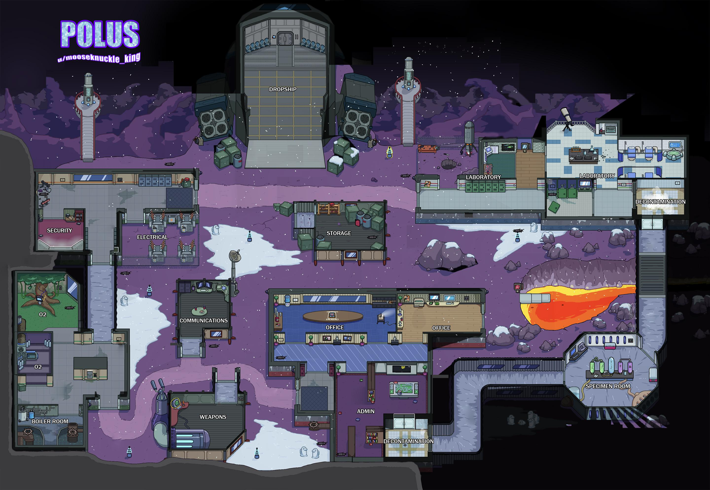

Poulus is probably the best map for 10 people because it is very big witch is fun to play on, the tasks are good and the cameras are better. It takes a smart imposter not to kill on cams.
The other maps are good too but with like 8 people. I think this because they are smaller than polus wich makes them less fun.